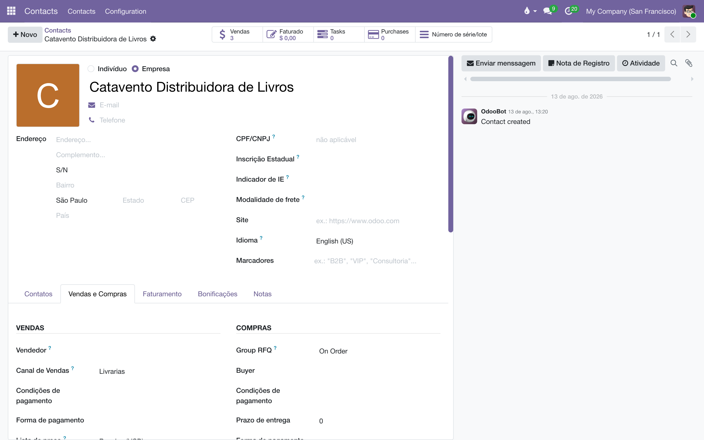
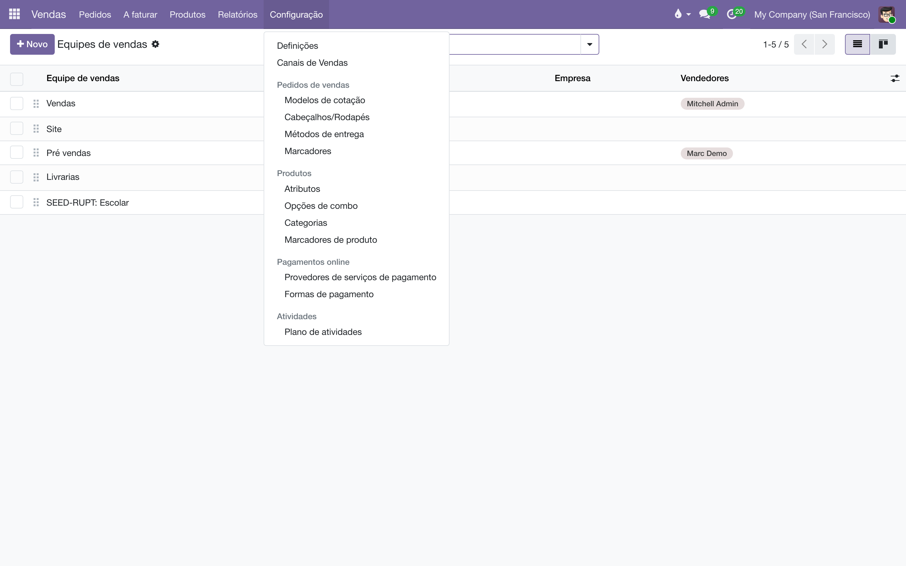
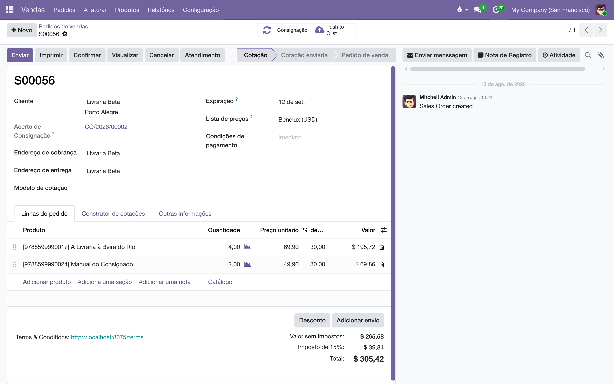

Canal de vendas do cliente
Uma editora não vende do mesmo jeito para uma livraria de bairro, uma distribuidora, uma universidade e o próprio site. Este módulo guarda essa classificação na ficha do cliente, faz os documentos herdarem dela — e garante que o desconto continue sendo um número, e não um preço menor.
Visão geral
O módulo devolve ao cadastro do cliente o campo Canal de Vendas, que o Odoo 19 removeu, e trata o canal como aquilo que ele é numa editora: uma propriedade do cliente, não uma consequência de quem o atendeu.
| O que entrega | Onde aparece |
|---|---|
| O canal na ficha do cliente | Formulário e lista de Contatos, ao lado do Vendedor, com filtro e agrupamento na busca. |
| Uma língua só nas telas | Pedido, fatura, relatórios, filtros e menus passam a dizer "Canal de Vendas" — é o mesmo campo do núcleo, com o rótulo certo. |
| A grade dos canais | A tela de configuração de canais abre em lista editável, para arrumar dezenas de uma vez em vez de um cartão por vez. |
| O desconto na linha | Liga a opção Descontos do Odoo e acende a coluna Desc.% na fatura. |
Por que o canal não pode ser deduzido. O Odoo 19 tirou team_id do cliente e passou a deduzir a equipe do pedido a partir da filiação do vendedor. Isso pressupõe que o comercial se divide por quem vende — departamento, território. Numa editora a divisão é por o que o cliente é: livrarias pequenas, médias, independentes, universitárias, distribuidoras, site próprio, sebos, feiras, instituições, governo. Uma mesma vendedora atende clientes de treze canais diferentes; deduzir do vendedor colapsaria os treze em um.
Gravar o canal na ficha não contradiz o Odoo 19. O que ele removeu foi a dedução, não o direito de registrar. Aqui não se deduz nada: alguém classifica o cliente, e os documentos herdam a classificação.
Neste manual, canal é a classificação comercial do cliente. Não confundir com os manuais da área Canais de venda, que tratam de integrações com quem manda pedidos de fora (Amazon e afins). Um cliente da Amazon tem canal; a integração com a Amazon é outra coisa.
Configuração
Não há nada a configurar depois de instalar. A instalação faz três coisas de uma vez:
| Na instalação | O que muda |
|---|---|
| Liga a opção Descontos | Em Vendas › Configuração › Ajustes. Ver O desconto na linha — é uma condição para o cálculo de royalties e para a nota fiscal, não uma preferência de tela. |
| Renomeia os menus para "Canais de Vendas" | Em Vendas › Configuração e no menu de relatórios. O nome do menu é a única parte que a tradução comum não alcança, e por isso é escrita na instalação. |
| Põe a lista na frente do kanban | A ação de canais abre em lista. O kanban continua a um clique, no seletor de visões. |
Os canais em si são registros que você cria: Vendas › Configuração › Canais de Vendas. Um banco novo vem com um canal de fábrica chamado Sales; renomeie-o ou desative-o.
O canal na ficha do cliente
O campo Canal de Vendas fica no formulário do contato, logo abaixo do Vendedor — são a mesma pergunta ("por onde este cliente é atendido"), e ficam juntas para ninguém preencher uma e esquecer a outra.

| Onde | Como se usa |
|---|---|
| Formulário do contato | Escolha o canal na lista. Não dá para criar um canal digitando aqui, de propósito: canal novo é decisão comercial, e se faz na tela de configuração. |
| Lista de contatos | A coluna vem ligada. Selecione várias linhas, digite o canal em uma e o Odoo pergunta se aplica a todas — é assim que se classifica trinta clientes de uma vez. |
| Busca | Digite o nome do canal na barra para filtrar, ou use Agrupar por › Canal de Vendas para ver a carteira dividida. |
Num grupo com mais de uma editora, o mesmo cliente pode ser de canais diferentes em cada uma — e é comum: numa editora ele é distribuidora, na outra é livraria. O que você lê e grava é sempre o valor da empresa ativa. Trocar de empresa no seletor do topo troca o valor mostrado.
Uma filial com a ficha vazia herda o canal da matriz. Quem consigna se apoia nisso: uma rede com trinta lojas se classifica uma vez, na matriz, e as lojas seguem — até que alguma receba canal próprio, que então prevalece para ela.
Arrumar a lista de canais
A tela Vendas › Configuração › Canais de Vendas abre em lista editável, com as colunas que se precisa preencher ao organizar o comercial:

| Coluna | Para que serve |
|---|---|
| Nome | Editável na própria lista — renomear é metade do trabalho de arrumar canais herdados de uma migração. |
| Líder da Equipe | Quem responde pelo canal. |
| Empresa | Só aparece para quem enxerga mais de uma editora, e o normal é deixar vazia: canal é recorte de clientela, não propriedade da editora. Ver a nota abaixo. |
| Membros | Os vendedores do canal. É a coluna que se preenche em bloco ao montar times novos. |
Clicar numa linha edita ali mesmo; selecionar várias e digitar aplica a todas. O kanban continua disponível no seletor de visões, e é a tela melhor para acompanhar um canal — a lista é para organizar todos.
Num grupo editorial, é tentador criar "Livrarias pequenas" em cada selo. Não faça: agrupar é agrupar por registro, e dois registros com o mesmo nome viram duas linhas iguais em toda tela da casa — contratos, pedidos, faturas, análises, prateleira, campanhas. Deixe a Empresa vazia e o canal serve a todas. Cada documento já carrega a empresa dele, então o relatório por editora continua inteiro.
O canal nos documentos
O canal da ficha é o padrão dos documentos do cliente, e cada documento guarda o seu: um pedido de 2024 continua sendo do canal em que foi feito, mesmo que o cliente seja reclassificado hoje. Isso é de propósito — o histórico não deve se reescrever quando a classificação muda.
| Documento | De onde vem o canal |
|---|---|
| Pedido de venda e fatura | Comportamento do próprio Odoo. Este módulo só corrige o rótulo do campo, que passa a ser Canal de Vendas. |
| Acordo de consignação | Nasce do canal do cliente e pode ser mudado à mão; depois disso o valor fica. Ver Acordos de consignação. |
| Operação e acerto de consignação | Vêm do acordo — é ele quem manda na consignação — e recuam para a ficha do cliente quando ainda não há acordo. |
Os módulos de consignação não dependem deste. Eles procuram o canal na ficha do cliente e, se o campo não existir, seguem sem ele. Uma casa que só consigna não é obrigada a instalar o cadastro comercial inteiro; quem instala os dois ganha a herança.
O desconto na linha
Com a opção Descontos desligada — que é o padrão do Odoo —, o percentual da lista de preços entra dentro do preço unitário e o campo Desc.% fica em zero. Um livro de R$ 54,90 numa lista de 55% sai por R$ 24,705, com desconto zero. O total fecha, e o desconto some do razão.
Três coisas do Liber leem o desconto no campo, e emudecem juntas quando ele vira preço menor:
| O que depende | O que acontece com a opção desligada |
|---|---|
| Royalty sobre o preço de venda (cálculo de royalties) | A base é preço × quantidade. Com o preço já líquido, o autor recebe sobre R$ 24,705 em vez de R$ 54,90. |
| Venda especial | É reconhecida quando o desconto da linha alcança o mínimo configurado. Com desconto zero, nenhuma alcança. |
| vDesc da NF-e (emissão de NF-e) | Sai da diferença entre o valor bruto e o subtotal. Um preço já líquido zera a diferença, e o DANFE vai sem desconto. |
Por isso a opção é ligada na instalação, e não deixada como preferência. Ligada, o Odoo devolve o preço de tabela ao preço unitário e o percentual ao campo próprio, no pedido e na fatura.

Desligá-la em Vendas › Configuração › Ajustes não dá erro nem aviso: os três cálculos acima simplesmente passam a usar números errados, em silêncio. Uma atualização do módulo religa a opção.
A coluna Desc.% do pedido acende sozinha com a opção. A da fatura não — ela nasce escondida no Odoo, independentemente de qualquer configuração, e a fatura mostrava Preço e Valor sem nada entre os dois, exatamente onde o desconto deveria estar. O módulo a acende. Todas as colunas continuam no seletor, e quem já ajustou o seu mantém a escolha.
Regras e guardas
| Regra | Por quê |
|---|---|
| O canal do cliente é o padrão, não a lei. Cada documento guarda o seu e não se reescreve depois de gravado. | Reclassificar um cliente não pode reescrever o histórico dele. Carimbo, não espelho. |
| Na consignação, o acordo manda. Havendo acordo, é dele que a operação e o acerto tiram o canal. | O acordo é o registro comercial da relação; a ficha é o padrão de quem ainda não tem acordo. |
| O canal é por empresa. Ler e gravar depende da empresa ativa. | Num grupo editorial, o mesmo cliente ocupa posições comerciais diferentes em cada selo. |
| Não se cria canal pela ficha do cliente. | Canal novo é decisão comercial e se toma na tela de configuração, onde se vê a lista inteira. Digitar um nome novo no cadastro é como nascem canais duplicados. |
| O campo aponta para o mesmo modelo do núcleo. "Canal" é só o rótulo. | Pedido, fatura e relatórios do Odoo já usam esse campo. Um modelo próprio partiria o vocabulário em dois e deixaria os relatórios do núcleo de fora. |
Perguntas frequentes
Mudei o canal de um cliente e os pedidos antigos continuam no canal velho. Está errado?
Não, está no desenho. O documento carimba o canal no momento em que nasce. Se você precisa mesmo reclassificar o histórico, isso é uma correção em massa deliberada — e deve ser feita sabendo que muda relatórios já fechados.
Preciso instalar o CRM para usar isto?
Não. Sem o CRM instalado, o canal é apenas uma classificação: uma lista de nomes que os documentos apontam. O módulo depende de Vendas, que já traz o necessário.
A mesma classificação aparece repetida ao agrupar. Por quê?
Porque existem dois registros com o mesmo nome, um por editora — herança comum de uma migração. Agrupar é agrupar por registro, então "Livrarias pequenas (46)" e "Livrarias pequenas (80)" são dois canais, não um. A correção é ter um registro só, com a Empresa vazia, e apontar os documentos dos dois para ele. É exatamente o trabalho para o qual a lista editável existe.
Se o canal não tem empresa, como separo o relatório por editora?
Pelo documento. Todo pedido, fatura, contrato e acerto carrega a própria empresa; o canal é só o recorte de clientela que atravessa as duas. Agrupar por canal e por empresa dá a leitura cruzada. O que continua sendo por empresa é o canal do cliente: o mesmo cliente pode ser distribuidora num selo e livraria em outro.
O campo continua se chamando "equipe" em algum lugar. Por quê?
O nome técnico do campo no Odoo é team_id, e ele aparece assim em exportações, importações e filtros salvos. Nas telas o rótulo é "Canal de Vendas". Curiosamente, nos filtros do próprio Odoo o nome técnico do agrupamento é sales_channel: "canal" é o vocabulário antigo da Odoo, que sobreviveu nos nomes técnicos depois que o rótulo virou "equipe".
A coluna Desc.% sumiu da minha fatura.
Alguém a desligou no seletor de colunas dessa tela, ou a opção Descontos foi desligada nos ajustes de Vendas. Verifique a opção primeiro: ela é a que afeta o cálculo, e não só a exibição.
- Acordos de consignação — onde o canal do cliente vira o canal do contrato, e onde o contrato passa a mandar.
- Cálculo de royalties — a base de cálculo que depende de o desconto estar no campo, e as vendas especiais.
- Emissão de NF-e — o vDesc que sai do desconto da linha.